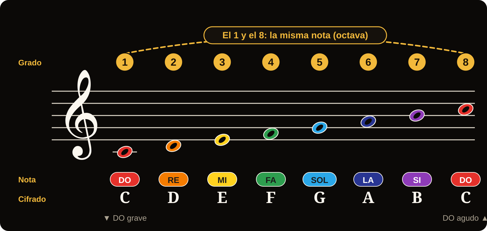
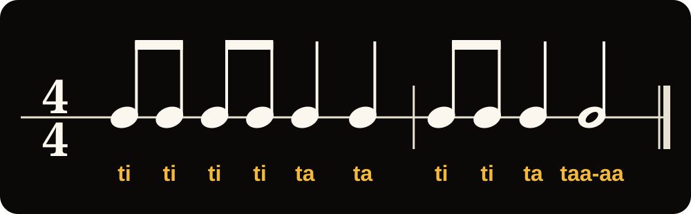
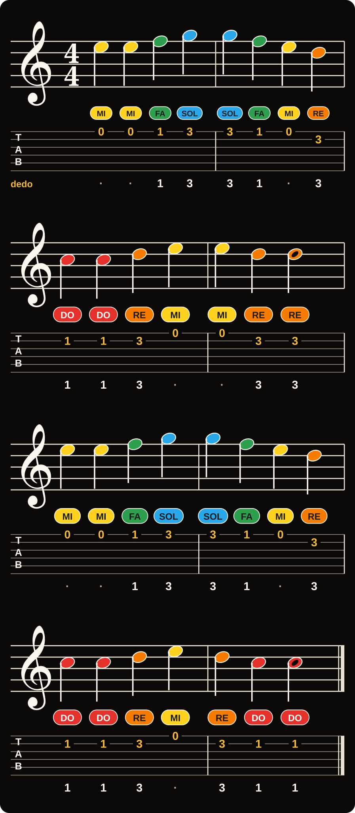
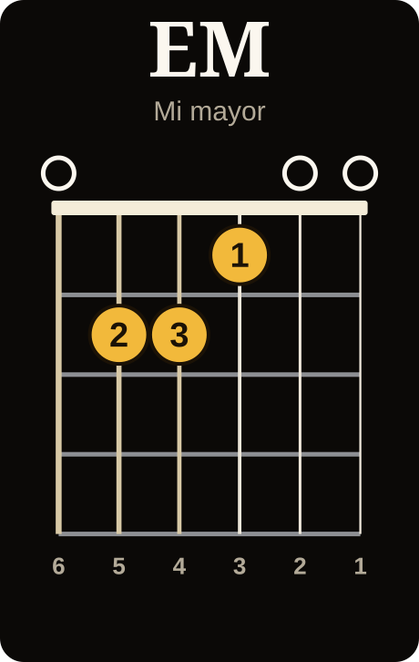
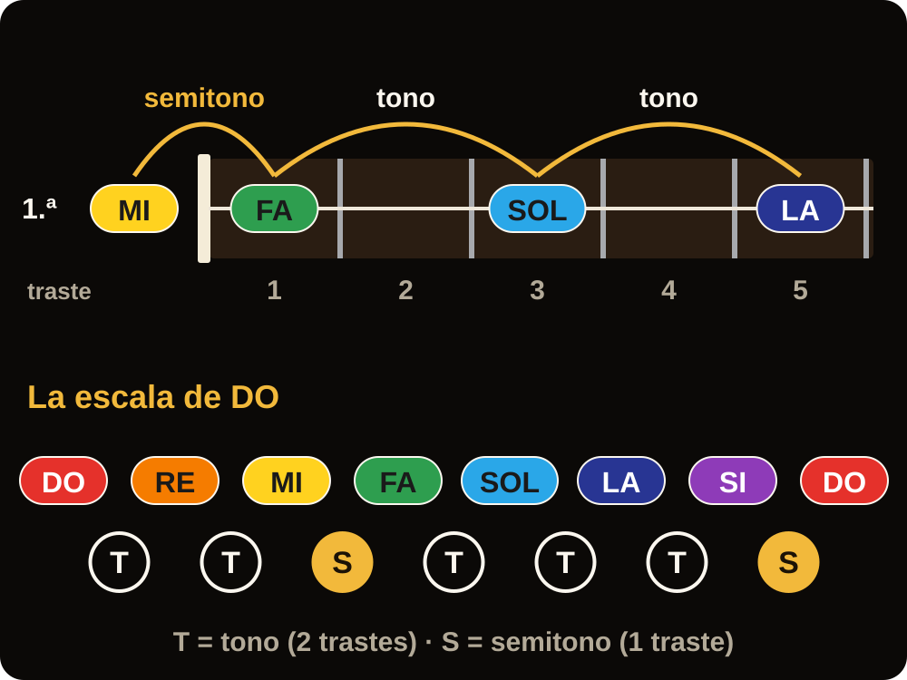
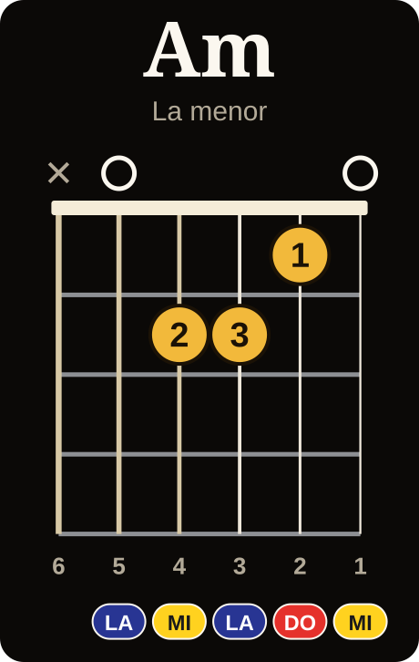
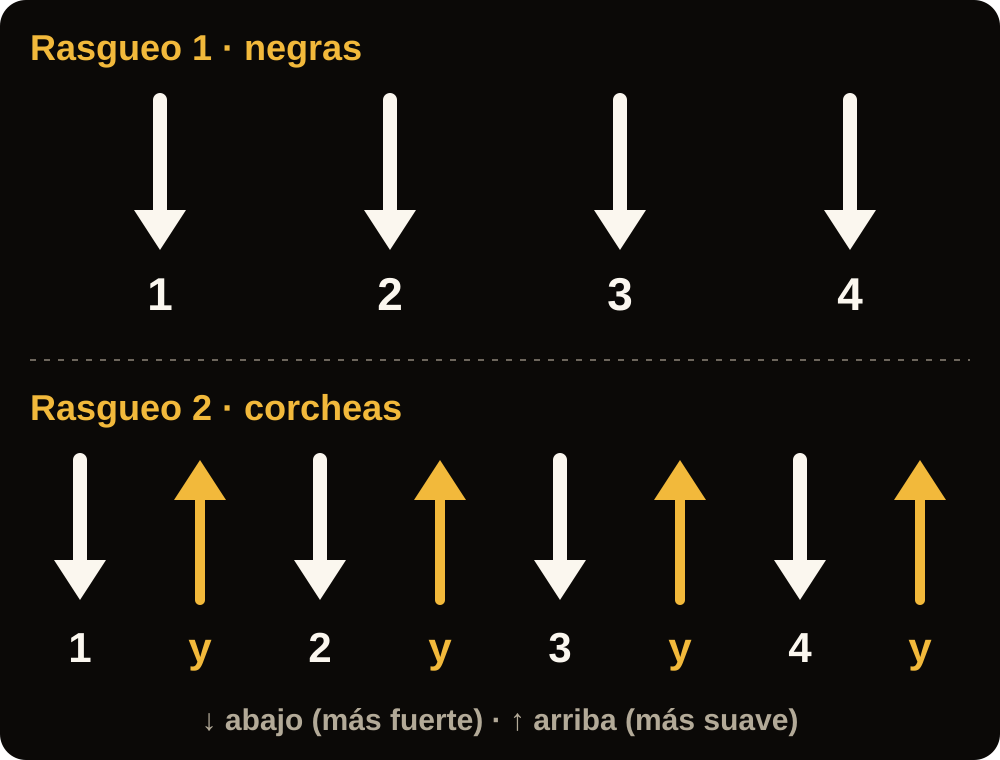
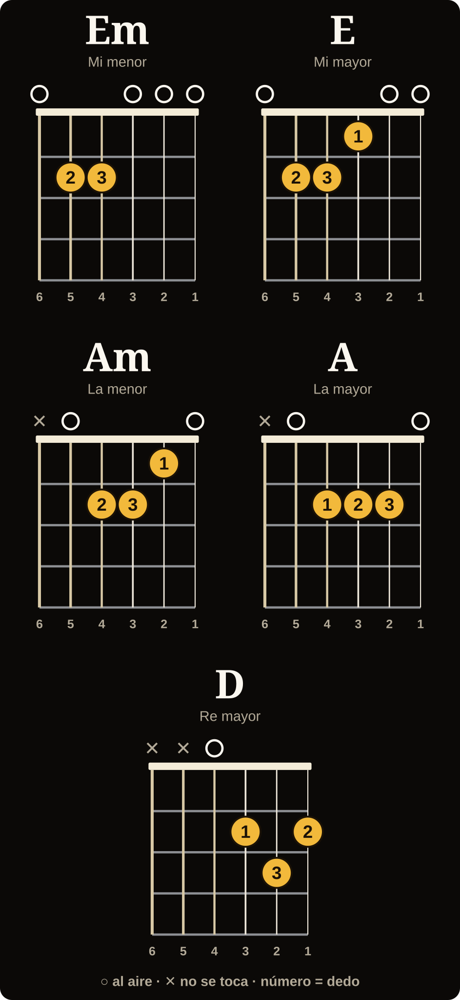
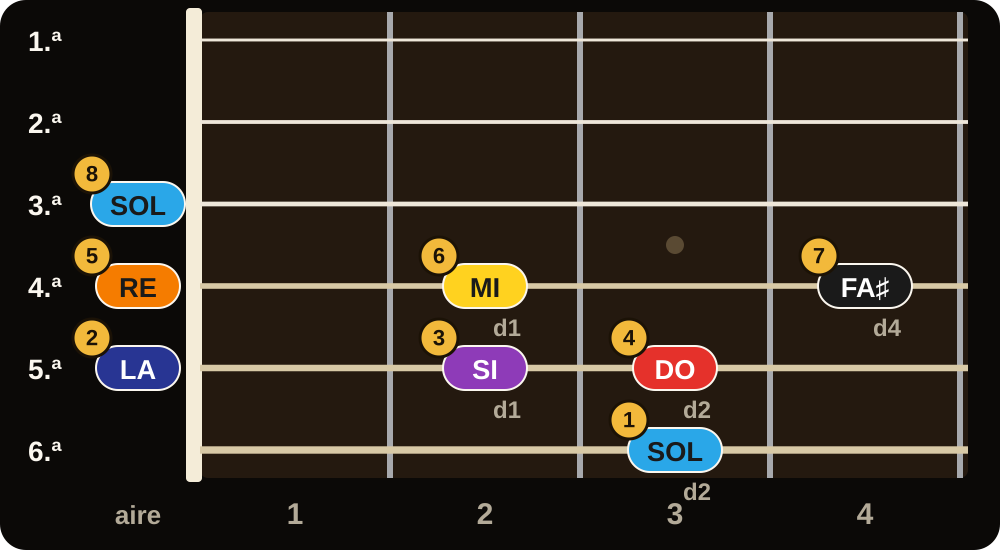
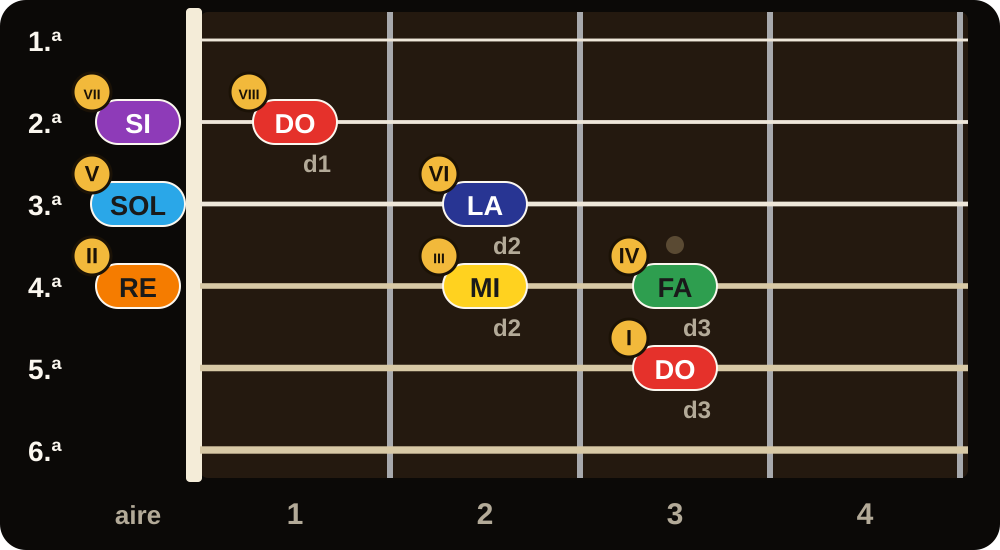

Las mismas notas, números y textos de las láminas de hoy, con el estilo nuevo. Ahora son angostas: en el teléfono se ven completas, sin deslizar. Las explicaciones van como texto debajo de cada lámina.
Mes 1

Clase 1Los 7 grados de la escala + la octavaDe DO grave (en la línea adicional de abajo) a DO agudo (3.er espacio). Cada nota lleva su grado, su nombre y su cifrado. El 1 y el 8 son la misma nota: una octava.Clase 4El pentagrama: 5 líneas y 4 espaciosLas líneas y los espacios se cuentan de abajo hacia arriba.Clase 4MI, FA y SOL en la 1.ª cuerdaMI al aire (0), FA en el traste 1 con el dedo 1 y SOL en el traste 3 con el dedo 3. En la tablatura, la línea de arriba es la 1.ª cuerda.
Mes 2
Clase 5Ritmo en negrasUna negra = un tiempo. Di «ta» en cada nota y lleva el pulso con el pie.Clase 5Figuras musicales y silenciosCuánto dura cada figura, su silencio y la sílaba para leerla. Los cuadros dorados son los tiempos que ocupa.Clase 5Ritmo con redondas, blancas y negrasAlarga la sílaba mientras la nota sigue sonando: «taa-aa» dura dos tiempos.Clase 5Ejercicio 1-2-3-4Un dedo por traste: dedo 1 en el traste 1, dedo 2 en el 2… Empieza en la 6.ª cuerda y sube hasta la 1.ª.Clase 6Ritmo con silenciosEn el silencio no se toca: di «sh» y sigue contando el tiempo.Clase 6Compases de 2/4, 3/4 y 4/4El número de arriba dice cuántos tiempos tiene cada compás. El primer tiempo es el fuerte.Clase 6SI, DO y RE en la 2.ª cuerdaSI al aire (0), DO en el traste 1 con el dedo 1 y RE en el traste 3 con el dedo 3.

Clase 7Ritmo con corcheasDos corcheas unidas = un tiempo: «ti-ti».Clase 7Lectura en la 1.ª y la 2.ª cuerdaAhora se combinan las dos cuerdas. Mira la tablatura para saber en qué cuerda va cada nota.

Clase 8Himno de la alegríaLa primera melodía completa, solo con la 1.ª y la 2.ª cuerda.
Mes 3

Clase 9Em y EMEM es Em más el dedo 1 en la 3.ª cuerda, traste 1. «Qué es un acorde» ya la explica la lámina G-12 de la sección 3.

Clase 10Tonos y semitonosEn la guitarra, 1 traste = 1 semitono y 2 trastes = 1 tono. En la escala de DO, entre MI–FA y entre SI–DO hay solo un semitono.

Clase 10Am y ALas dos con la 6.ª cuerda sin tocar (✕). En A, los dedos 1, 2 y 3 van juntos en el traste 2.Clase 11D · Re mayorSolo se tocan las 4 cuerdas de abajo: la 6.ª y la 5.ª no suenan.

Clase 11Rasgueos básicosAbajo en el número y arriba en la «y». Hacia abajo suena más fuerte; hacia arriba, más suave.Clase 11Cómo leer la tablaturaCada línea es una cuerda (la de arriba es la 1.ª). El número dice qué traste pisar.Clase 11Escala de DO mayorSube de DO a DO y vuelve a bajar, con la tablatura y el dedo de cada nota.

Clase 12Los 5 acordes del Nivel 1Em, E, Am, A y D para repasar todo junto.
Nivel 2
Clase 13La escala cromáticaEn la 1.ª cuerda cada traste sube un semitono. Las notas con ♯ o ♭ van en negro. Entre MI–FA y SI–DO no hay nota en medio.Clase 14Las notas de la primera posiciónTrastes 0 a 3 en las seis cuerdas. Dedo 1 en el traste 1, dedo 2 en el 2 y dedo 3 en el 3. Los bordones son las cuerdas 4, 5 y 6.

Clase 15Escala de SOL mayorDe SOL grave (6.ª cuerda, traste 3) a SOL agudo (3.ª al aire). Los círculos dorados son los grados; d1, d2, d4, el dedo. Tiene un FA♯.Clase 16Mis cinco acordesG, C, D, Em y Am con las notas que suenan en cada cuerda.Clase 17Patrones de rasgueo↓ abajo · ↑ arriba · la flecha dorada es el acento. En el vals, el pulgar toca el bajo en el 1 y se rasguea suave en el 2 y el 3.Clase 18El arpegio p, i, m, aEl pulgar toca el bajo y cada dedo tiene su cuerda aguda: i la 3.ª, m la 2.ª y a la 1.ª.

Clase 19Escala de DO mayor con sus gradosDel DO de la 5.ª cuerda (traste 3) al DO de la 2.ª (traste 1). Los grados van en números romanos: I = DO, IV = FA, V = SOL… VIII vuelve a ser DO.Clase 19Lectura sin color · «Primer paseo»Composición AMA. Escribe el nombre de cada nota en su cuadro y después tócala.Clase 20Los acordes de la tonalidad de DOSobre cada grado se forma un acorde: mayor (I, IV, V), menor (ii, iii, vi) o disminuido (vii°). En F, el dedo 1 pisa la 1.ª y la 2.ª: tu primera mini-cejilla.Clase 21La cejilla: F y BmEl dedo 1 pisa varias cuerdas a la vez. Pulgar detrás del mástil, el dedo 1 recto y pegado al traste. Revisa que cada cuerda suene limpia.Clase 22Acordes de séptimaAl acorde mayor se le suma una cuarta nota, la séptima. Suenan con ganas de ir al acorde siguiente.Clase 23Toco con expresiónLas dinámicas dicen qué tan fuerte o suave se toca; la forma, cómo se ordenan las partes (A estrofa, B coro).Clase 24Tocamos en bandaCada instrumento tiene su tarea. Escucha a la batería, toca más suave si hay teclado y mira al líder para las entradas y el final.